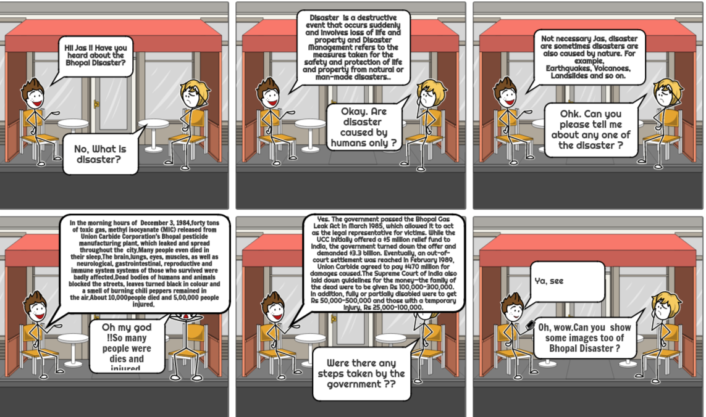

What is Disaster Management?
According to the International Federation of Red Cross and Red Crescent Societies: “More people are becoming vulnerable to disasters or are forced to cope with acts of violence, financial crises and growing uncertainty, often without adequate support from their governments.” Disasters can be either natural or human-made events and can include pandemics, technological disasters or environmental cataclysms.Specifically, disaster management is about organizing and directing resources to cope with a disaster and coordinating the roles and responsibilities of responders, private sector organizations, public sector agencies, nonprofit and faith-based organizations, volunteers, donations, etc. The ultimate goal of the disaster-management leader is to minimize the event’s impact, something that involves preparedness, response, recovery and mitigation.
- Prevention
The best way to address a disaster is by being proactive. This means identifying potential hazards and devising safeguards to mitigate their impact. Although this stage in the cycle involves putting permanent measures into place that can help minimize disaster risk, it’s important to acknowledge that disasters can’t always be prevented.
Prevention involves scenarios such as the following:
Implementing an evacuation plan in a school, for example, showing teachers how to lead students to safety in the event of a tornado or fire
Planning and designing a city in a way that minimizes the risk of flooding, for example, with the use of locks, dams or channels to divert water away from populous areas
- Mitigation
Mitigation aims to minimize the loss of human life that would result from a disaster. Both structural and nonstructural measures may be taken.
A structural measure means changing the physical characteristics of a building or an environment to curb the effects of a disaster. For example, clearing trees away from a house can ensure that dangerous storms don’t knock down the trees and send them crashing into homes and public buildings.
Nonstructural measures involve adopting or amending building codes to optimize safety for all future building construction.
- Preparedness
Preparedness is an ongoing process in which individuals, communities, businesses and organizations can plan and train for what they’ll do in the event of a disaster. Preparedness is defined by ongoing training, evaluating and corrective action, ensuring the highest level of readiness.
Fire drills, active-shooter drills and evacuation rehearsals are all good examples of the preparedness stage.
- Response
Response is what happens after the disaster occurs. It involves both short- and long-term responses.
Ideally, the disaster-management leader will coordinate the use of resources (including personnel, supplies and equipment) to help restore personal and environmental safety, as well as to minimize the risk of any additional property damage.
During the response stage, any ongoing hazards are removed from the area; for example, in the aftermath of a wildfire, any lingering fires will be put out, and areas that pose a high flammability risk will be stabilized.
- Recovery
The fifth stage in the disaster-management cycle is recovery. This can take a long time, sometimes years or decades. For example, some areas in New Orleans have yet to fully recover from Hurricane Katrina in 2005. It involves stabilizing the area and restoring all essential community functions. Recovery requires prioritization: first, essential services like food, clean water, utilities, transportation and healthcare will be restored, with less-essential services being prioritized later.
Ultimately, this stage is about helping individuals, communities, businesses and organizations return to normal or a new normal depending on the impact of the disaster.
